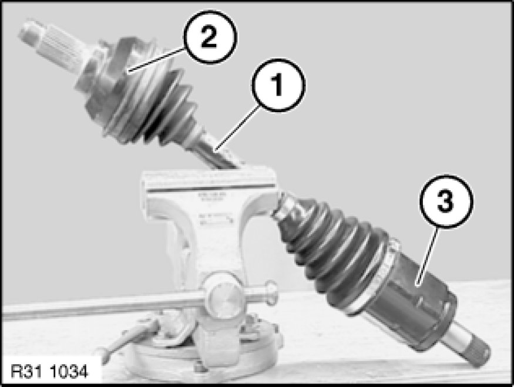
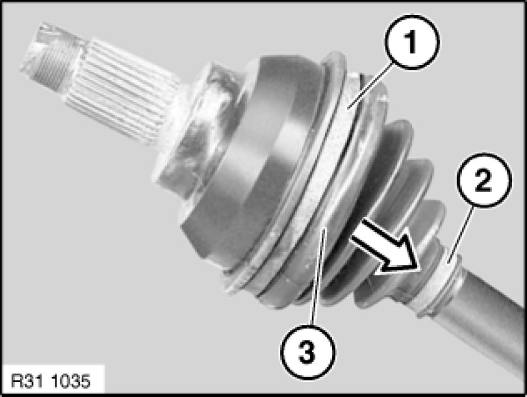
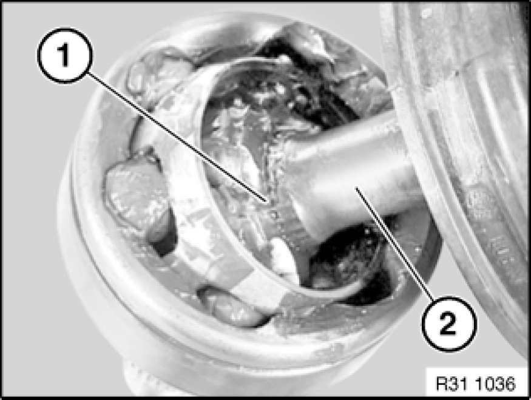
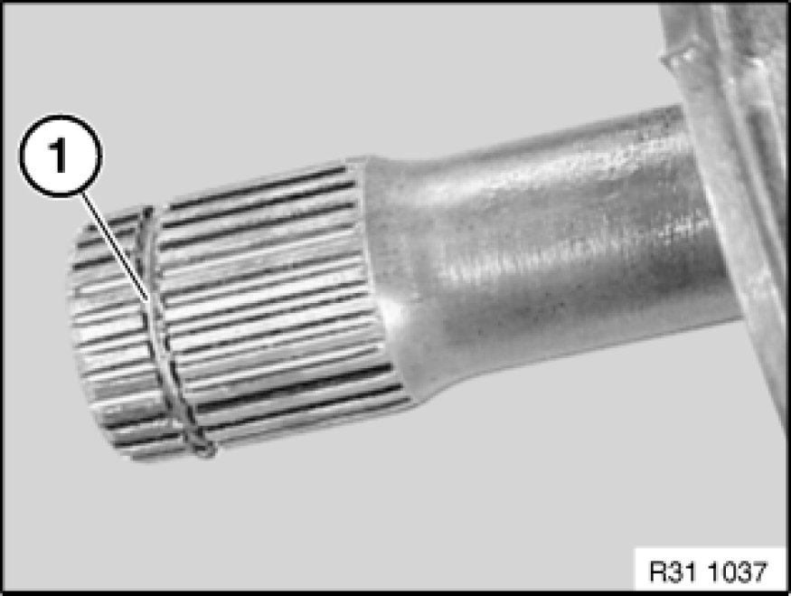
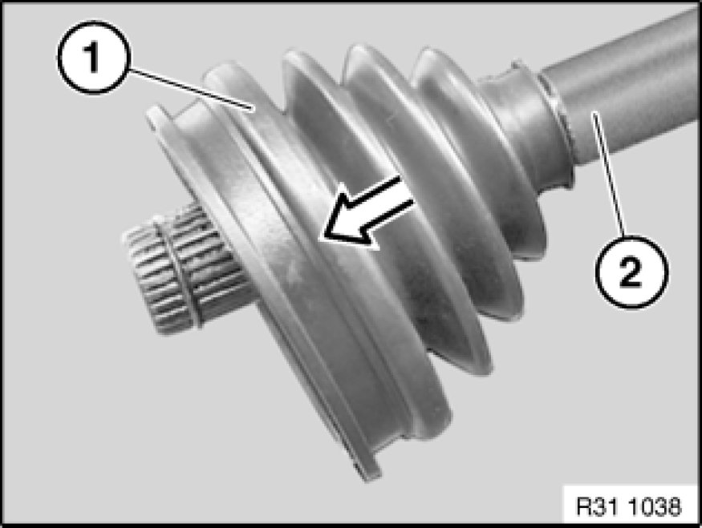
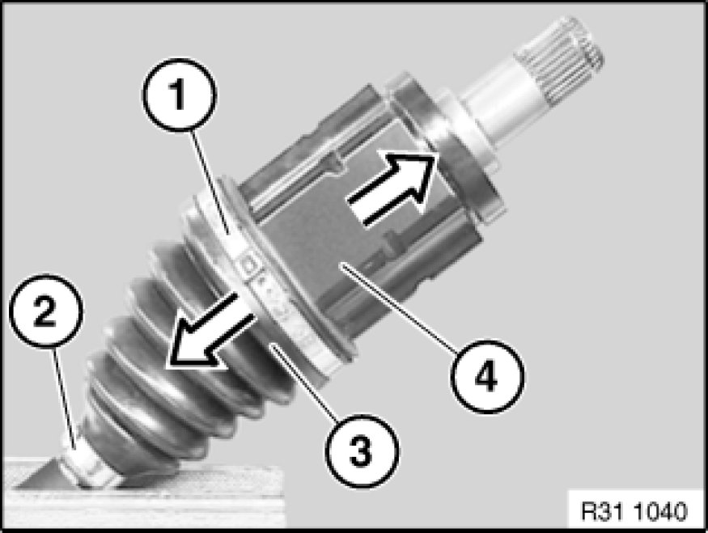
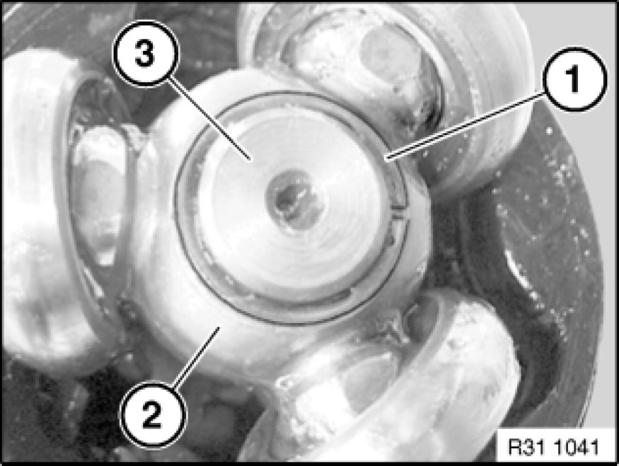
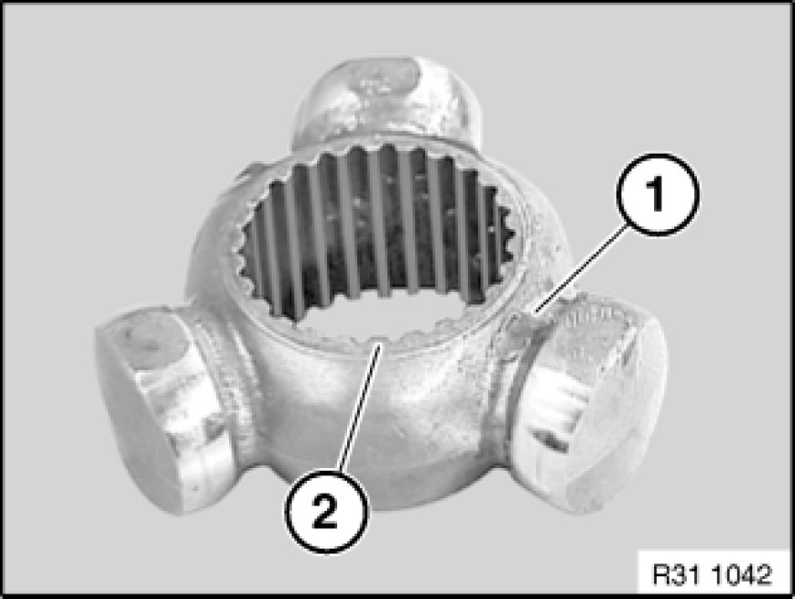
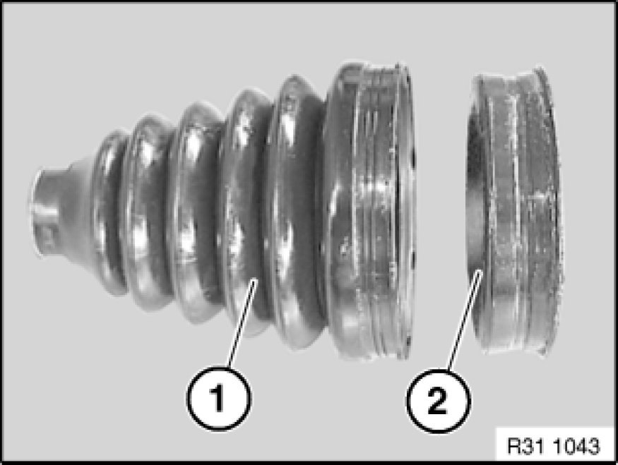

Replacing Two Gaiters on Output Shaft(s)
31 60 535 - Replacing two gaiters on output shaft(s)

Necessary preliminary tasks:
- Remove and clean output shaft Removing and Installing/Replacing Left or Right Output Shaft

Grip output shaft (1) in vice with aluminium clamping jaws.
Note:
2 = Joint, wheel side
3 = Joint, transmission side

Replacing gaiter of wheel-side joint:
Release band clamps (1, 2).
Pull back rubber gaiter (3).

Press off joint (1) via contact pressure of retaining ring on shaft (2).
Installation:
Push on joint until retaining ring can be heard to snap into place.

Lift out retaining ring (1).
Installation:
Replace circlip (1).

Pull off gaiter (1) over shaft (2).
Carefully clean all parts with a cloth.
Note:
Regrease constant-velocity joint with the grease from the repair kit.

Replacing gaiter of transmission-side joint:
Release band clamps (1, 2).
Pull back rubber gaiter (3).
Detach tulip element (4).

Remove retaining ring (1).
Installation:
Replace circlip (1).
Detach tripod element (2) from shaft (3).
Pull off gaiter over shaft (3).
Carefully clean all parts with a cloth.

Installation:
Flat side (2) of tripod element (1) must point to retaining ring.

Installation:
Before pushing gaiter onto shaft: assemble gaiter (1) and gaiter adapter (2).
Note:
Regrease constant-velocity joint (tripod element) with the grease from the repair kit.